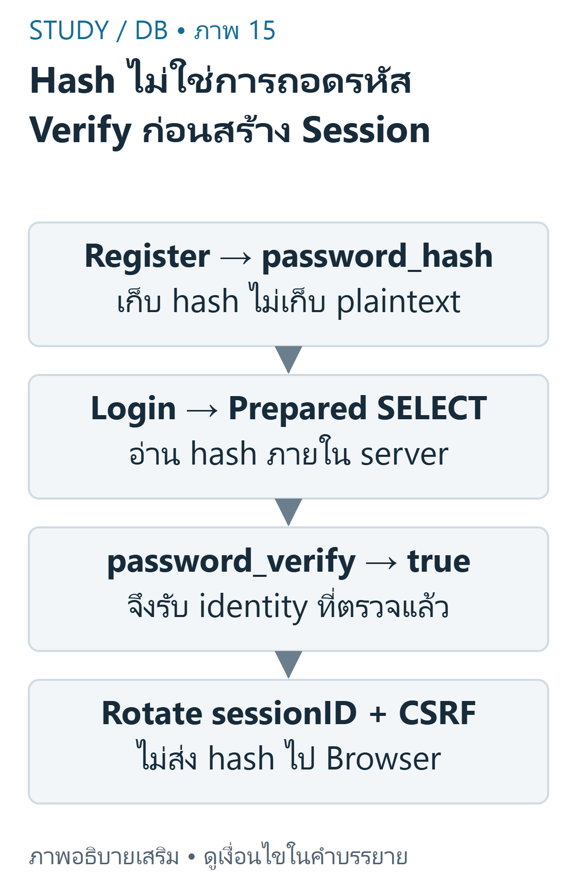
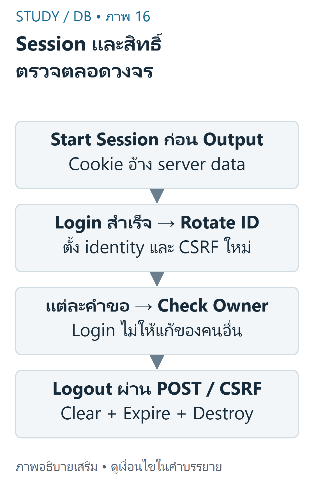

DB 08 — ยืนยันตัวตนและกำหนดสิทธิ์
ตัวอย่างเชิงป้องกันเรียบเรียงจากDB-S03หน้า9–18และpublic repositoryที่pinไว้ ไม่ใช่บริการLoginจริงบนStudy
เป้าหมายการเรียนรู้
- แยก Authentication จาก Authorization และตรวจสิทธิ์ในทุกการอ่าน/เขียน
- อธิบาย hash/verify,session,cookie,rotation,logoutและCSRF
- แก้TODOในstarterอย่างเข้าใจโดยไม่เปิดเผยsecretหรือทดสอบบัญชีจริง
ใครเข้าระบบ และมีสิทธิ์ทำอะไร
Authentication ตอบว่าเป็นใครจากหลักฐานการเข้าสู่ระบบ Authorization ตอบว่าผู้ใช้นั้นทำอะไรกับresourceนี้ได้ Loginสำเร็จไม่ให้สิทธิ์แก้Resumeของคนอื่น การซ่อนปุ่มในBrowserไม่แทนการตรวจบนServer และprofile_idจากhidden fieldยังแก้ได้
DB-S03หน้า12แสดงusersแบบขั้นต่ำ ส่วนmigrationในpublicrepoที่ตรวจเพิ่มprofile_idเป็นUNIQUE FKไปprofile จึงเป็นschemaคนละระยะ ไม่ควรอ้างว่าคอลัมน์นี้อยู่ในสไลด์แล้ว ผู้ใช้หนึ่งบัญชีเชื่อมหนึ่งprofileในตัวอย่างภายหลัง
public login.phpมีTODO1–5และlogout.phpมีTODO6ที่ยังไม่เสร็จจริง ส่วนSQLCRUDในpublicrepoใส่ครบแล้วแม้commentTODOยังอยู่ ต่างจากstudent.zipที่ยังมีSELECT1สี่จุด เลือกดูโค้ดจริง ไม่อนุมานจากชื่อไฟล์
รหัสผ่านและการสมัคร
password_hashสร้างhashแบบทางเดียวพร้อมsaltตามalgorithm; password_verifyตรวจรหัสผ่านกับhash ไม่ใช่ถอดรหัส และhashใหม่ของpasswordเดิมอาจไม่เท่ากัน ไม่เก็บplaintextหรือเปรียบเทียบpasswordกับhashด้วย==

อ่านภาพ: สมัครใช้ password_hash เก็บ hash ไม่เก็บ plaintext; Login ใช้ prepared query แล้ว password_verify เมื่อสำเร็จจึงสร้าง identity และเปลี่ยน sessionID Salt ทำให้ hash ใหม่อาจต่างกัน
<?phpfunction register(\mysqli $conn, string $name, string $email, string $password): int { $email = strtolower(trim($email)); $name = trim($name); // This lab policy is explicit, not a universal password-strength rule. // PHP8.4 PASSWORD_DEFAULT uses bcrypt, whose input limit is72 bytes. if (mb_strlen($name, 'UTF-8') < 2 || mb_strlen($name, 'UTF-8') > 150 || !filter_var($email, FILTER_VALIDATE_EMAIL) || strlen($email) > 150 || strlen($password) < 10 || strlen($password) > 72) { throw new \InvalidArgumentException('Invalid registration'); } mysqli_begin_transaction($conn); try { $stmt = mysqli_prepare($conn, 'INSERT INTO profile(full_name,email) VALUES (?,?)'); mysqli_stmt_bind_param($stmt, 'ss', $name, $email); mysqli_stmt_execute($stmt); $pid = mysqli_insert_id($conn); mysqli_stmt_close($stmt); $hash = password_hash($password, PASSWORD_DEFAULT); $stmt = mysqli_prepare($conn, 'INSERT INTO users(profile_id,email,password_hash) VALUES (?,?,?)'); mysqli_stmt_bind_param($stmt, 'iss', $pid, $email, $hash); mysqli_stmt_execute($stmt); $uid = mysqli_insert_id($conn); mysqli_stmt_close($stmt); mysqli_commit($conn); return $uid; } catch (\Throwable $error) { mysqli_rollback($conn); throw $error; // HTTP layer must show a generic message, not DB details }}ตัวอย่างนี้เรียกหลังเปิดmysqliแบบstrictและutf8mb4 รับname/emailที่ตรวจแล้ว สร้างprofile+usersในtransaction หากemailซ้ำและINSERTusersล้มเหลวจะrollbackไม่ทิ้งprofileกำพร้า PHP8.4.27ที่ทดสอบใช้PASSWORD_DEFAULTเป็นbcryptซึ่งจำกัดอินพุต72bytes จึงกำหนดนโยบายแลป10–72bytesอย่างชัดเจน นี่ไม่ใช่คำรับรองว่ารหัสผ่าน10ตัวทุกแบบปลอดภัยหรือDEFAULTจะไม่เปลี่ยนในอนาคต ภาษาไทยหนึ่งตัวอาจใช้หลายbytes
ตัวอย่างจำกัดemail150bytesให้เข้าได้ทั้งprofile.emailVARCHAR150และusers.emailVARCHAR190ในschemaที่ตรวจ ไม่อ้างว่าทุกตารางรับ190 การนำไปใช้จริงต้องทบทวนนโยบายและschemaร่วมกัน เก็บhashในคอลัมน์ที่รองรับการเปลี่ยนalgorithm เช่นVARCHAR255
ตรวจLoginและวงจรSession
Browserเก็บsession cookieที่มีidentifier;PHPเชื่อมidentifierกับข้อมูลฝั่งserver ไม่ส่งpassword_hashหรือสิทธิ์ทั้งหมดให้Browserเชื่อเอง

อ่านภาพ: Cookie อ้าง session ฝั่ง server; Login สำเร็จ rotateID และ CSRF ทุกคำขอตรวจ owner Logout clearข้อมูล expirecookieและdestroy แยก Authentication กับ Authorization
<?phpfunction authenticate(\mysqli $conn, string $email, string $password): ?array { $email = strtolower(trim($email)); $stmt = mysqli_prepare($conn, 'SELECT id,profile_id,password_hash FROM users WHERE email=? LIMIT 1'); mysqli_stmt_bind_param($stmt, 's', $email); mysqli_stmt_execute($stmt); mysqli_stmt_bind_result($stmt, $uid, $pid, $hash); $found = mysqli_stmt_fetch($stmt); mysqli_stmt_close($stmt); if (!$found || !password_verify($password, $hash)) return null; return ['user_id' => $uid, 'profile_id' => $pid];}ผลตัวอย่าง: emailที่มีอยู่+passwordถูกคืนuser_id/profile_id; passwordผิดหรือไม่มีบัญชีคืนNULL ข้อความหน้าเว็บควรทั่วไปเพื่อลดการเปิดเผยบัญชี พร้อมrate limiting/HTTPSในการใช้งานจริง ซึ่งไม่ได้สร้างในstaticlessonนี้
<?phpfunction startSession(bool $https): void { if (session_status() !== PHP_SESSION_ACTIVE) { ini_set('session.use_strict_mode', '1'); ini_set('session.use_only_cookies', '1'); session_set_cookie_params(['httponly'=>true, 'secure'=>$https, 'samesite'=>'Lax']); session_start(); }}function finishLogin(array $verifiedUser): void { if (session_status() !== PHP_SESSION_ACTIVE || !is_int($verifiedUser['user_id'] ?? null) || $verifiedUser['user_id'] < 1 || !is_int($verifiedUser['profile_id'] ?? null) || $verifiedUser['profile_id'] < 1) { throw new \RuntimeException('Verified user and active session required'); } session_regenerate_id(true); $_SESSION = ['user_id'=>$verifiedUser['user_id'], 'profile_id'=>$verifiedUser['profile_id'], 'csrf'=>bin2hex(random_bytes(32))];}function actorProfile(array $session): int { if (!is_int($session['user_id'] ?? null) || $session['user_id'] < 1 || !is_int($session['profile_id'] ?? null) || $session['profile_id'] < 1) { throw new \RuntimeException('Login required'); } return $session['profile_id']; // never take the owner ID from a hidden form field}เรียกstartSessionก่อนoutput และตั้งsecureตามHTTPSจริง finishLoginต้องรับผลที่ตรวจpasswordแล้ว ไม่รับarrayจากrequest เมื่อLoginสำเร็จเปลี่ยนsessionIDและCSRFtokenเพื่อลดsessionfixation HttpOnlyช่วยกันJavaScriptอ่านcookie แต่ไม่แก้XSSทุกแบบ Secureให้ส่งผ่านHTTPS; SameSiteช่วยบางสถานการณ์แต่ไม่แทนCSRFtoken
<?phpfunction logout(): void { $_SESSION = []; if (ini_get('session.use_cookies')) { $p = session_get_cookie_params(); setcookie(session_name(), '', ['expires'=>time()-3600, 'path'=>$p['path'], 'domain'=>$p['domain'], 'secure'=>$p['secure'], 'httponly'=>$p['httponly'], 'samesite'=>$p['samesite'] ?? 'Lax']); } session_destroy();}Logoutที่เปลี่ยนสถานะควรใช้POSTผ่านcheckCsrfก่อน จากนั้นล้างข้อมูลsession,expirecookieโดยใช้path/domainเดิมและdestroy การunsetเพียงuser_idอาจเหลือข้อมูลหรือcookieอื่น ต้องพิจารณาทั้งวงจร
ตรวจเจ้าของทุกครั้ง
ตัวอย่างพื้นฐาน: ผู้ใช้Aเข้าสู่ระบบได้profile1และอ่านskillของ1 ตัวอย่างท้าทาย: Aแก้URLส่งidของskillที่เป็นของprofile2 ต้องไม่แก้ได้ แม้เป็นidจริงและผ่านCSRFแล้ว ใช้session-ownerร่วมกับresource-idในWHERE
UPDATE skill SET skill_name=?,skill_level=?WHERE id=? AND profile_id=?;parameterตัวสุดท้ายมาจากactorProfile($_SESSION)ที่เชื่อถือได้จากserver ไม่ใช้$_POST['profile_id'] การทดสอบอิสระสร้างสองบัญชี พบwrong-ownerupdate/deleteไม่เปลี่ยนแถว ขณะที่เจ้าของแก้ได้ การaffected_rows=0อาจหมายถึงค่าไม่เปลี่ยน จึงไม่สรุปทันทีว่าไม่มีresourceหรือผิดสิทธิ์
ป้องกันเป็นหลายชั้น
Prepared statementsกันค่าปะปนโครงสร้างSQL แต่ไม่แทนAuthorization; HTMLescapingกันบริบทoutput ไม่แทนCSRF; CSRFtokenไม่แทนLogin
<?phpfunction checkCsrf(string $method, mixed $submitted, array $session): void { if ($method !== 'POST' || !is_string($submitted) || !is_string($session['csrf'] ?? null) || $session['csrf'] === '' || !hash_equals($session['csrf'], $submitted)) { throw new \RuntimeException('Forbidden request'); }}| ความเสี่ยง | ชั้นป้องกันที่เหมาะสม |
|---|---|
| SQLInjection | preparedstatement+allowlistidentifier |
| XSSในHTMLtext/attributeที่ใส่quote | htmlspecialcharsตามบริบท |
| CSRFเปลี่ยนข้อมูล | POST+secretCSRFtoken+hash_equals |
| IDOR/แก้คนอื่น | ตรวจsessionownerบนทุกquery |
| Sessionfixation | strictsession+rotateหลังLogin |
| secretหลุด | ไม่commit.env/credentials;rotateเมื่อรั่ว |
การตรวจที่ทำจริงและข้อจำกัด
PHP8.4.27 lintและCLIintegrationกับMariaDB11.4.9ตรวจregister,hash/verify,sessionIDrotation,CSRF,logoutและownershipแล้ว แต่ไม่ใช่การทดสอบHTTPcookieบนAngsila,rate limit,HTTPSจริงหรือการรับรองproductionauthenticationครบระบบ ไม่ได้ลองบัญชีหรือเปลี่ยนserverมหาวิทยาลัย
ข้อผิดพลาดและแบบฝึกคิด
- ข้อ1: ALoginผ่านจึงแก้idของBได้หรือไม่? เฉลย: ไม่ ต้องตรวจownerด้วย;hiddenfieldไม่เป็นหลักฐาน
- ข้อ2: hashสองครั้งไม่เท่ากันแปลว่าpasswordผิดหรือไม่? เฉลย: ไม่ ต้องpassword_verifyเพราะมีsalt
- ข้อ3: มีCSRFtokenแล้วจึงตัดWHEREprofile_idได้หรือไม่? เฉลย: ไม่ tokenตรวจที่มาคำขอคนละเรื่องกับสิทธิ์
สรุปทบทวน
- Loginกับpermissionเป็นคนละคำถาม;serverต้องตรวจทั้งคู่
- hash/verify,rotate,CSRF,preparedและescapingทำงานคนละชั้น
- แยกstarterที่ยังไม่เสร็จจากตัวอย่างที่ทดสอบแล้ว; ไม่อ้างCLIว่าเป็นHTTPdeployment
เนื้อหาฝึกเขียนและเฉลยต่อไปนี้เรียบเรียงเพื่อการเรียน ไม่ใช่ข้อสอบจริงหรือเฉลยทางการของผู้สอน เว็บไซต์นี้แสดงตัวอย่างแบบ static; ไม่ส่ง SQL, PHP หรือข้อมูลบัญชีไปรันบนเซิร์ฟเวอร์มหาวิทยาลัย
แหล่งข้อมูลและขอบเขต
DB-S03 หน้า9–18,29–30,37; DB-R01 public auth.php/register.php/login.php/logout.php และmigrationที่pinในinventory. อ้างอิงเสริม password_hash, password_verify, session security.
บัญชีแหล่งข้อมูลและข้อจำกัด ระบุเลขหน้ากายภาพของ PDF ทุกครั้ง เอกสารต้นฉบับที่ผู้ใช้ให้เป็นไฟล์ local-only และไม่ได้เผยแพร่ซ้ำ ภาพและโจทย์ฝึกเป็นงานเขียนเสริมที่แยกจากต้นฉบับ